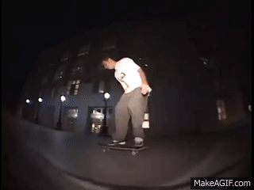
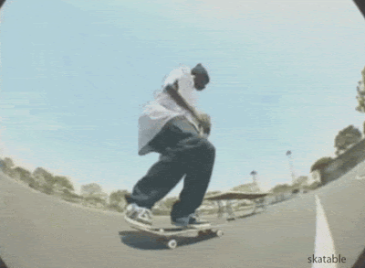

STYLE MATTERS: TOP 10 STYLE ICONS
By: Tinashe Madanire
Would you rather watch the hardest trick ever done but done with the worst style? Or, would you rather watch someone do the most stylish ollie over a manhole? I myself prefer the latter. Style in skateboarding exudes in a way that someone rolls down the street, the way they look on their skateboard, the natural fluidity of their motions, the way their tricks are done and landed. Sometimes perfection is not even required. Their efforts on the board almost seem unforced, as if it comes from a deeper source. Here is my top 10 list of skaters that I consider the most stylish (In no particular order because I could not bear that sort of pressure).
-
10: Brian Wenning
When I think of Brian Wenning, I picture impecable switch stance skating, the most balanced nosegrinds, ledge artistry and all this done with the most style. Take this switch backsmith as evidence.

Brian Wenning Switch Backsmith from The DC Video (2003) -
9: Stevie Williams
Style, pop, finesse. Stevie, known for making LOVE park his stomping grounds, comes with the complete package. Watch any of Stevie's parts and you will know why he is on this list. Marathon lines at LOVE in Transworld's The Reason will have you convinced
Stevie Williams Fakie Hardflip from a Chocolate Commercial (2000) -
8: Guy Mariano
Coming out as a child prodigy on Blind Video Days, Guy's talent was recognized early on but his stand out moment was with the release of Mouse by Girl Skateboards in 1996. This time in general was a time of great progression in skateboarding, with many of the tricks we are familiar with today being discovered in real time. Guy's part in Mouse is recognized as one of the most influential parts of all time. Guy was way ahead of time with his switch tricks, his ledge mastery plus style and execution. This is a must watch.
Guy Mariano in Mouse (1996) -
7: Keenan Milton
Another Girl Skateboards and Mouse alumni, Keenan Milton was also another influential skater that oozed style. His finesse and style on the board makes you want to pick up a board and go skate. Exhibit the Switch Flip to end all Switch Kickflips from his part in Girl Skateboard's Mouse (1996)(Also featured in our library).
Keenan Milton in Mouse (1996) -
6: Gino Ianucci
Hailing from New Jersey, Gino has been dubbed, the world's greatest pusher, but his style resonates way beyond that. Gino has this tendency to do the most difficult tricks with ease. Stand out parts from Gino are his Trilogy, and his Yeah Right Parts! Definitley go check them out.

Gino Ianucci in Yeah Right (2003) -
5: Wade Desarmo
Canada seems to have an unusual knack for producing some of the world's most stylish skateboarders. Some of them we couldn't include on this list as we are only limited to 10, but Wade Desarmo is without question, the most stylish among them. Breaking into the mainstream with his DGK It's Official Part. The world was introduced to one of the and still the most stylish skaters around.
Wade Desarmo in DGK - It's Official (2006) -
4: Mike Carrol
One of the most influential skateboarders of all time, hailing from San Francisco in the golden era of skateboarding, Mike Carrol was one of the skaters that pushed for the progression of skateboarding into the culture we know it today. He is a central aspect of the skate industry having found Girl Skateboards and made it into the culture staple it is today. Above all this he also happens to be one of the most stylish skateboarders on the planet. His Modus Operandi part stands the test of time.

Mike Carrol in Transworld Modus Operandi (2000) -
3: Antwuan Dixon
The myth around Antwuan is that he did his first kickflip first try. Hard to not believe considering the fact that everything Antwuan does is effortless. He skates as if he has never bailed in his life. Antwuan's style is undoubtebly unmatched.

Antwuan Dixon in Baker 3 (2005) -
2: Vincent Huhta
For the last 2 entries, I decided to choose from the new generation of skaters, starting with Vincent Huhta from Sweden. Vincent possesses a nonchalant yet creative approach to skating. His spot and trick leaves you bewildered and amazed as to how he actually just did that. Vincent skates how we all wish we could skate. I still watch his Sour Solution 2 at least once a month.

Vincent Huhta in The Sour Solution 3 (2023) -
1: Heitor Da Silva
Last but not least is the modern style king himself, Heitor Da Silva. This man's swag needs no explanation. Simply let the skating speak for itself.
Heitor Da Silva in adidas Skateboarding Presents /// Heitor (2019)